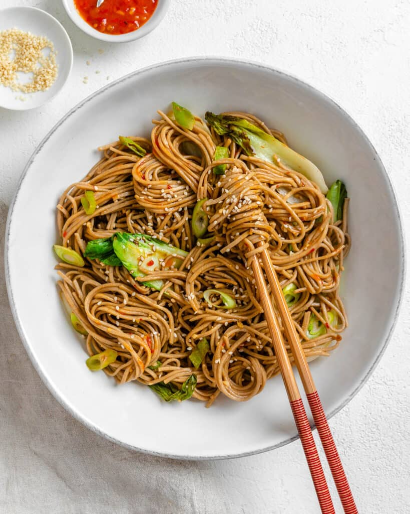

Sesame Soba Noodles

Description
Sesame soba noodles are a flavorful and satisfying dish that combines the
nutty taste of buckwheat soba noodles with a rich, savory sesame sauce.
The noodles are typically tossed in a dressing made from toasted sesame
oil, soy sauce, rice vinegar, and a touch of sweetness from honey or
sugar, creating a perfect balance of umami and tanginess. Often garnished
with sesame seeds, green onions, and a sprinkle of chili flakes for a hint
of heat, this dish can be customized with additions like shredded carrots,
cucumber, or tofu for extra texture and nutrition. Quick to prepare and
versatile, sesame soba noodles are ideal for a light lunch, dinner, or
even a refreshing cold noodle salad.
Main Ingredients
- Soba Noodles: 200g (about 2 bundles) – made from buckwheat.
- Toasted Sesame Oil: 2 tablespoons (for rich, nutty flavor).
- Soy Sauce: 3 tablespoons (or tamari for a gluten-free option).
- Rice Vinegar: 2 tablespoons (for tanginess).
- Honey or Sugar: 1-2 tablespoons (for a touch of sweetness).
- Garlic: 1-2 cloves, minced (optional, for extra flavor).
- Fresh Ginger: 1 teaspoon, grated (optional, for a zesty kick).
- Sesame Seeds: 1-2 tablespoons (toasted, for garnish).
Optional Add Ins
- Green Onions: 2-3 stalks, thinly sliced (for freshness).
- Chili Flakes or Sriracha: For a spicy kick.
-
Vegetables:
- Shredded carrots
- Sliced cucumber
- Bell peppers
- Steamed broccoli
-
Protein:
- Tofu (cubed and pan fried)
- Edamame
- Shredded chicken
Toppings (Optional)
- Extra sesame seeds
- Chopped cilantro or parsley
- Lime or lemon wedges (for a citrusy finish)
Steps
-
Cook the Soba Noodles :
- Bring a pot of water to a boil.
-
Add 200g (about 2 bundles) of soba noodles and cook according to the
package instructions (usually 4-6 minutes).
-
Drain the noodles and rinse them under cold water to stop the
cooking process and remove excess starch. Set aside.
-
Prepare the Sesame Sauce :
-
In a small bowl, whisk together:
- 2 tablespoons toasted sesame oil
- 3 tablespoons soy sauce (or tamari)
- 2 tablespoons rice vinegar
- 1-2 tablespoons honey or sugar (adjust to taste)
- 1-2 cloves minced garlic (optional)
- 1 teaspoon grated fresh ginger (optional)
- Taste and adjust the seasoning if needed. Set aside.
-
Toast the Sesame Seeds :
- Heat a dry skillet over medium heat.
-
Add 1-2 tablespoons sesame seeds and toast for 1-2 minutes, stirring
frequently, until golden and fragrant. Be careful not to burn them.
Set aside.
-
Prepare Add Ins (Optional) :
-
Chop or prepare any additional ingredients, such as:
- Sliced green onions
- Shredded carrots
- Sliced cucumber
- Pan fried tofu or protein of choice
-
Assemble the Dish :
-
In a large mixing bowl, combine the cooked soba noodles and the
sesame sauce. Toss until the noodles are evenly coated.
-
Add any optional add-ins (vegetables, protein) and gently mix.
- Sprinkle with toasted sesame seeds and sliced green onions.
-
Serve :
- Divide the noodles into serving bowls.
-
Garnish with extra sesame seeds, chili flakes, or a squeeze of
lime/lemon juice if desired.
- Serve chilled or at room temperature.